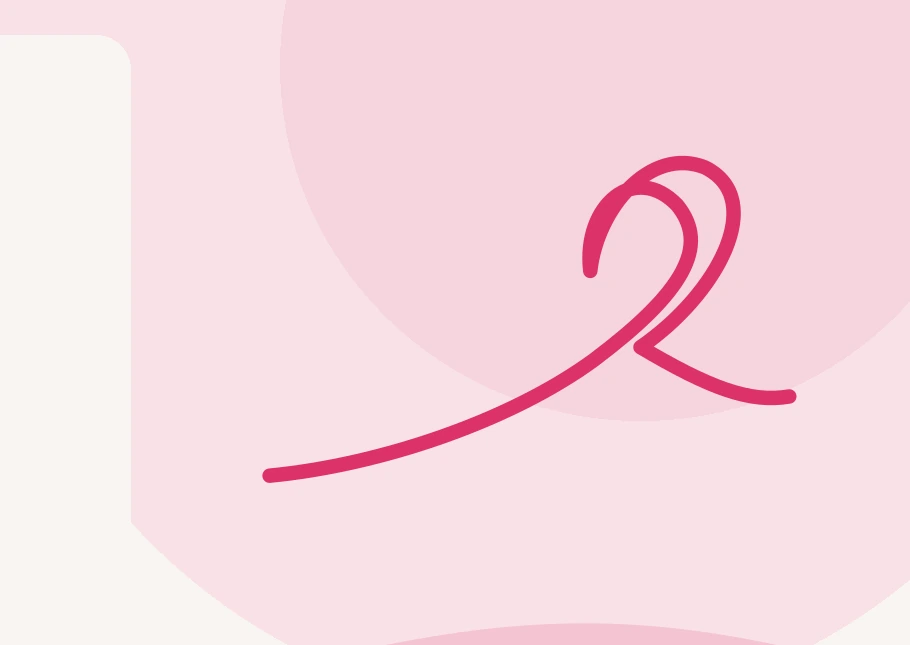
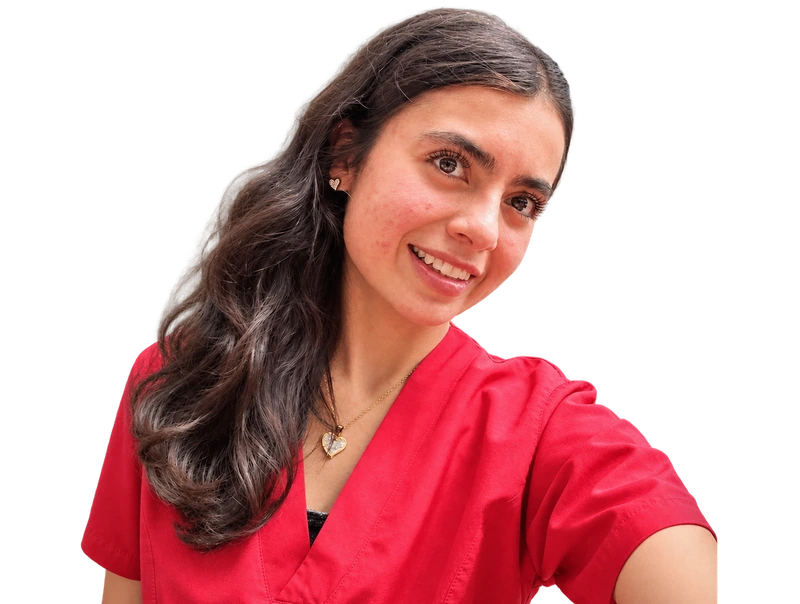
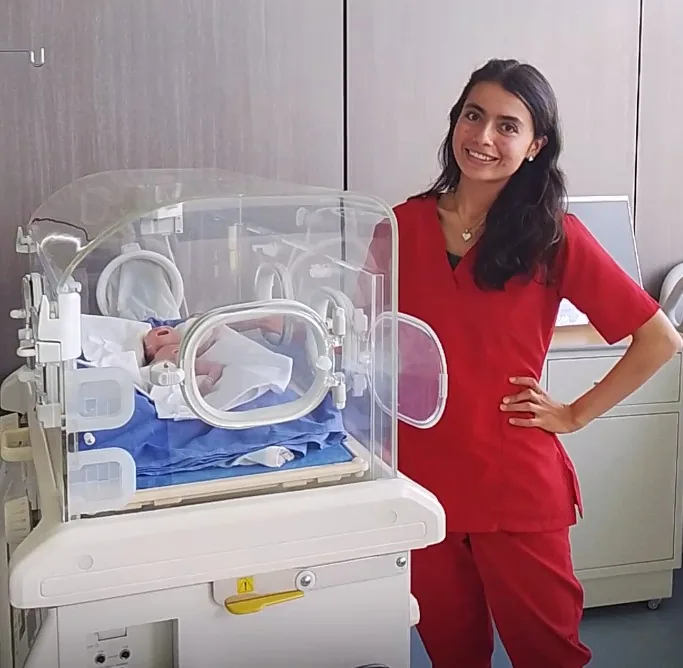
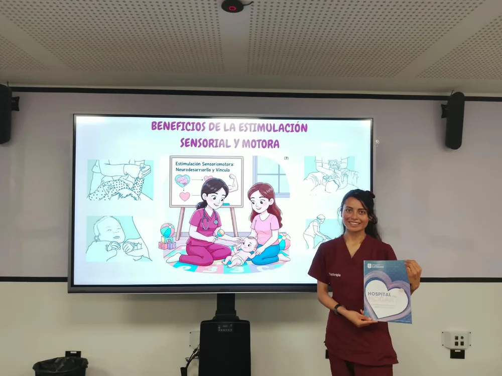

Neurodesarrollo infantil
Participación en el seguimiento de bebés prematuros y uso formativo de las escalas EAD-3 y AIMS.
PORTAFOLIO PROFESIONAL
Fisioterapeuta
Enfoque en neurodesarrollo
y primera infancia
Fisioterapeuta de la Universidad de La Sabana, con experiencia formativa en atención neonatal, rehabilitación e investigación clínica.


*Participación durante prácticas formativas; cifra documentada en el CV original.
01 PERFIL PROFESIONAL
Me interesa acompañar el desarrollo infantil y la recuperación funcional con atención centrada en las personas.
Mis prácticas me han permitido conocer la atención neonatal y pediátrica, la rehabilitación física y el trabajo con equipos interdisciplinarios. También he participado en actividades de investigación y educación a cuidadores.
Contactar a NataliaParticipación en el seguimiento de bebés prematuros y uso formativo de las escalas EAD-3 y AIMS.
Actividades de estimulación sensoriomotora y orientación a familias y cuidadores.
Prácticas de terapia física y respiratoria en consulta externa, hospitalización y urgencias.
Apoyo en bases de datos, revisión de evidencia y proyectos universitarios.
02 TRAYECTORIA
Una selección de mis prácticas clínicas y proyectos académicos, organizada de lo más reciente a lo anterior.
PRÁCTICA · AUXILIAR DE INVESTIGACIÓN
Universidad de La Sabana · Chía, Cundinamarca
Apoyo en actividades de seguimiento del desarrollo de bebés prematuros, registro de información clínica y uso formativo de las escalas EAD-3 y AIMS.
PRÁCTICA CLÍNICA ASISTENCIAL
Apoyo en el Proceso Interdisciplinario de Rehabilitación, consulta externa y terapia física y respiratoria en hospitalización y urgencias.
PRÁCTICA PEDIÁTRICA
Apoyo en PediaSuit, terapia Vojta, planes de tratamiento y talleres de autocuidado para cuidadores primarios.
PRÁCTICA · AUXILIAR DE INVESTIGACIÓN
Apoyo en estrategias sensoriomotoras, entrenamiento a familias, evaluación TIMPSI y seguimiento domiciliario de neonatos.
PRÁCTICA DE SALUD PÚBLICA
Actividades lúdico-educativas de promoción y prevención para pacientes y familias en salas de espera.
03 INVESTIGACIÓN Y RECONOCIMIENTOS
He participado en proyectos universitarios y desarrollado trabajos académicos basados en revisión de evidencia científica.
Trabajo académico orientado a la revisión de evidencia científica.
Reconocimiento académico · 2025
Hospital-Hogar I y II, Proyecto 360 y Madre Canguro
04 FORMACIÓN
Estudios completados, cursos de formación complementaria y herramientas de trabajo.
Universidad de La Sabana
Titulación en Fisioterapia, 2026.
ÉNFASIS FORMATIVOMorfofisiología · Desarrollo motor · Evaluación y diagnóstico · Investigación
05 EVIDENCIAS
Una selección de actividades académicas y material audiovisual.


Material académico · Video 1
Material académico · Video 2
Material académico · Video extendido
Material académico. Antes de publicar fotografías o videos con terceros, verificar autorizaciones y protección de datos personales.
06 CONTACTO
Puedes escribirme por correo o LinkedIn para hablar de oportunidades de trabajo en fisioterapia, atención pediátrica y rehabilitación.
DATOS DE CONTACTO
leydypahe@Chía, Cundinamarca · Colombia